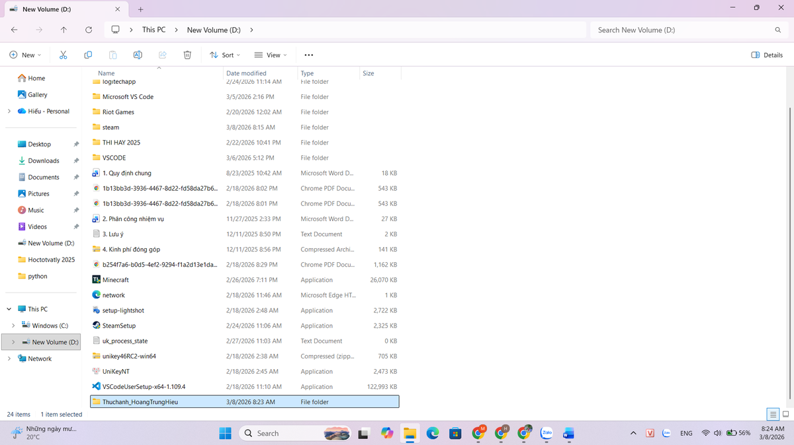
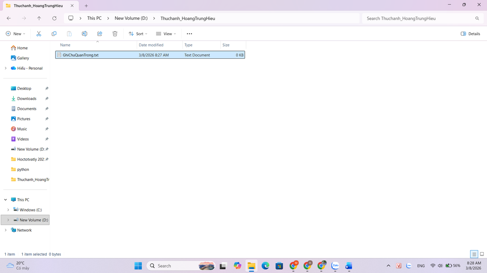
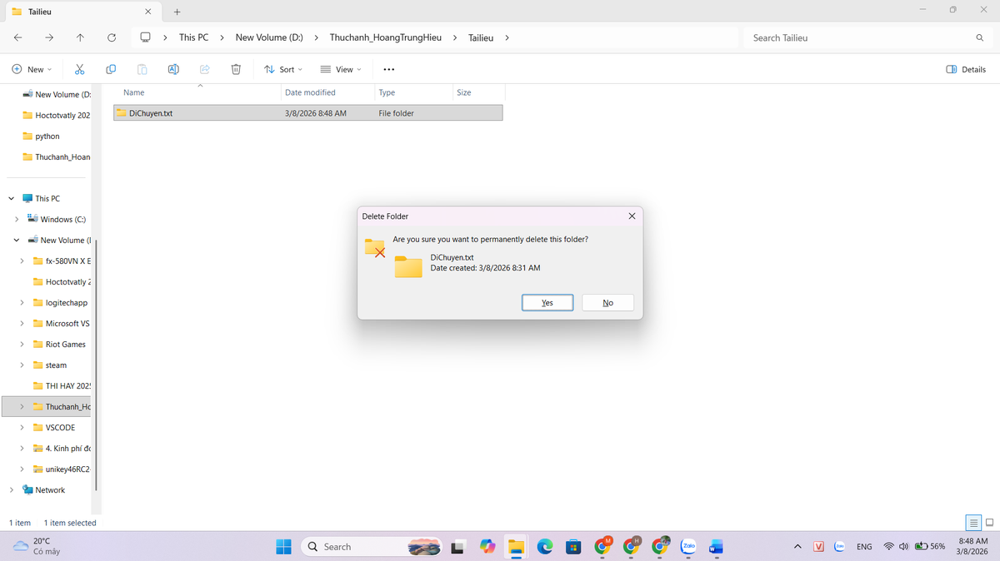
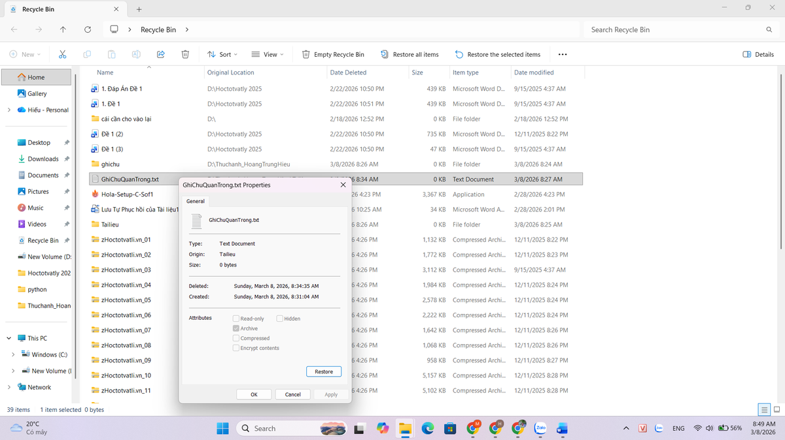

01
Năng lực · Quản lý tệp & thư mục
Thao tác cơ bản với tệp tin và thư mục
Quy tắc đặt tên đã thiết kế
- Không dấu, không khoảng trắng — dùng dạng Thuchanh_HoangTrungHieu để tương thích mọi hệ điều hành.
- Mô tả + chủ thể — tên nói rõ nội dung (vd. Ghichuquantrong.txt), tránh tên chung chung như "New file".
- Phân tầng theo chức năng — thư mục con Tailieu gom các tệp cùng loại, giúp tìm kiếm nhanh.
- An toàn dữ liệu — thực hành khôi phục từ Recycle Bin để hiểu cơ chế xóa mềm vs. xóa vĩnh viễn (Shift + Delete).

Tổ chức thư mục trong ổ D
Đổi tên tệp theo quy tắc
Xóa tệp có xác nhận
Khôi phục từ Recycle Bin